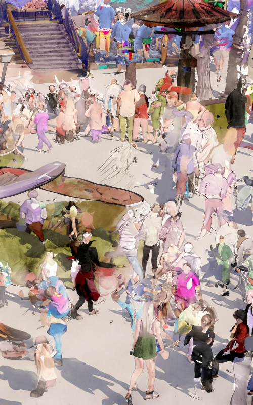

Social Life and Public Spaces of Videogames

Our cities are designed to meet that expectation. We can not imagine a city without its public spaces. But in our current world, people found another place to socialize, virtual spaces. In these new public areas, people can talk with someone who’s in a different country within seconds.
We also see this new approach in video games with multiplayer games and their social environments. It can also be discussed that these spaces are becoming an alternative to physical public places.
This review is to discuss whether a public space inside a video game virtual space is possible or not. And also to understand why the players choose these types of socializing and public places instead of physical ones by discussing various articles about the topic.
Full Version